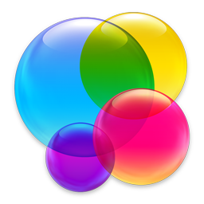
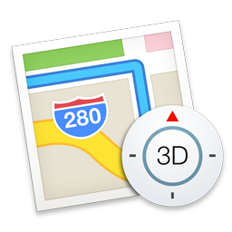
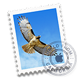

OS官网
回收站

GameCenter
Calendar
iCloud

地图
设置
登录页
切换壁纸
新建文件夹
新建文件夹
子项1
子项1
子项2
今天
通知
- finder
- computer

- gamecenter
- icloud

- prefapp

- trashicon

- appstore

- iTunes

- imusic

- preview

- mail 
- notes.png

- messages

- maps
- ibooks
- facetime

- launchpad